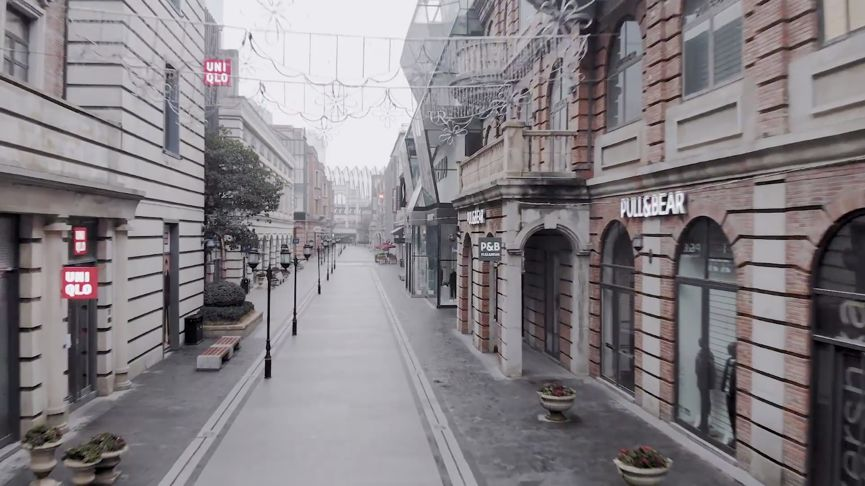
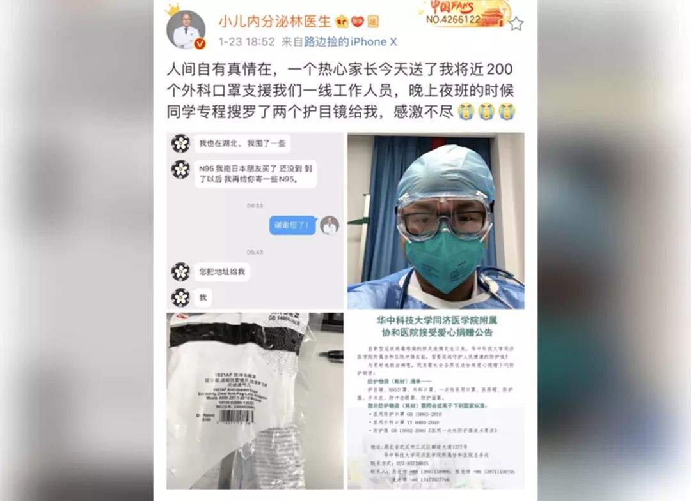
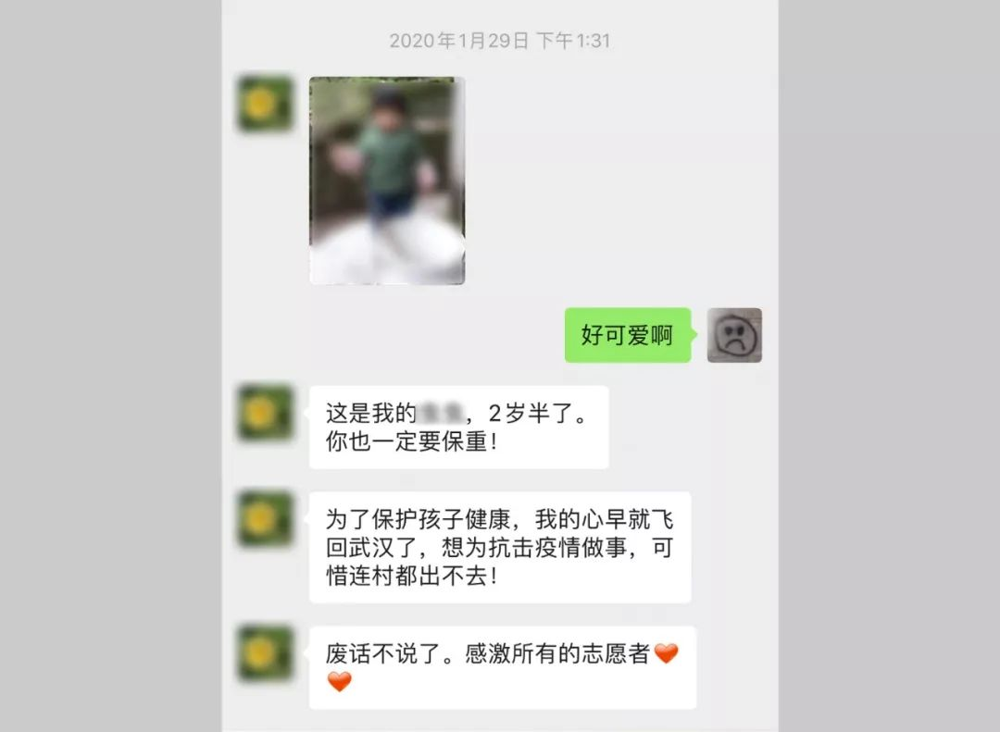
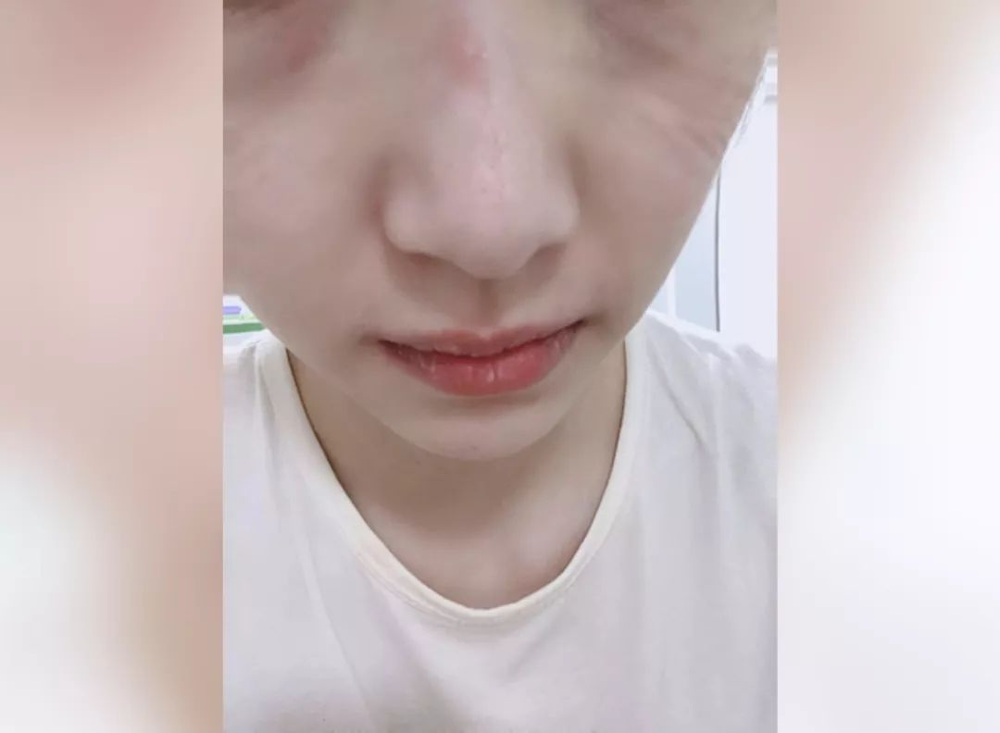
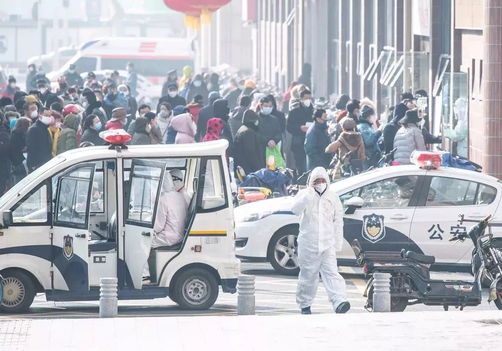
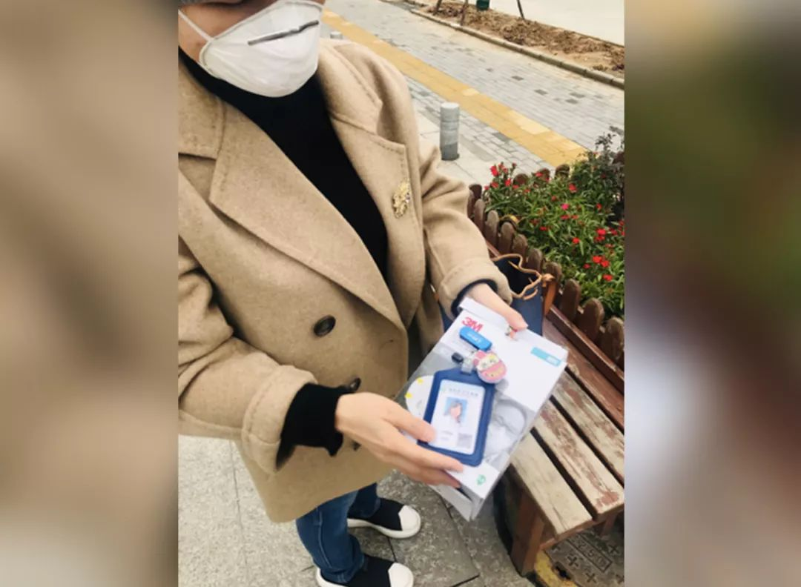
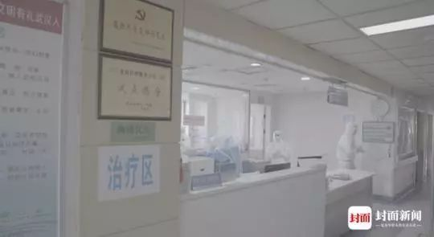
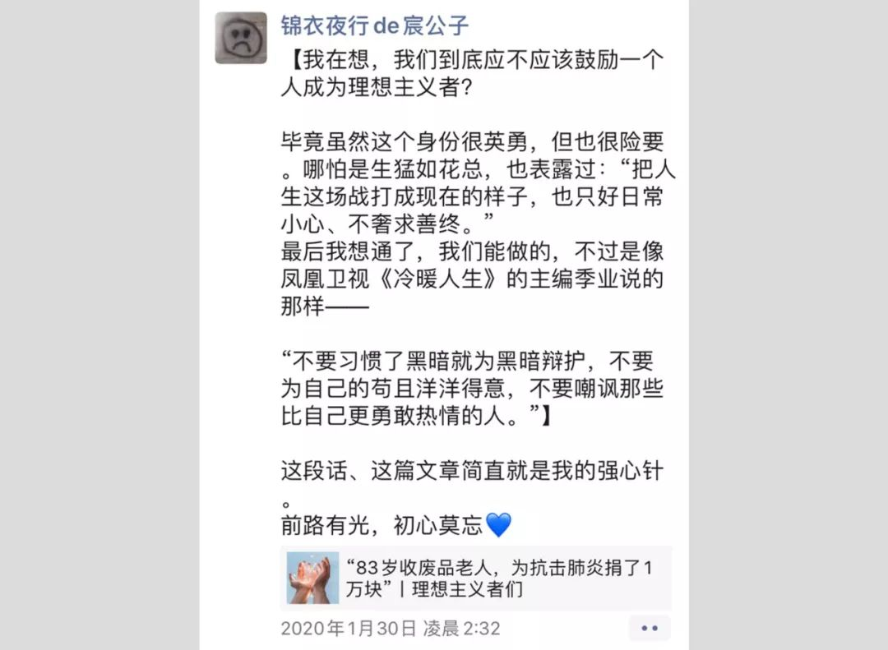

我们是武汉市民，想为这个城市做点事情
原文链接 备份链接 1月23日，武汉市公共交通停运。一些本地的私家车主决定为医务人员护航，免费接送他们上下班，并运送救援物资到各大医院。34岁的车车便是其中一员。 文 | 吴美芬 从1月底开始，车车几乎跑遍了武汉每一个医院，为医护人员送 …
大家好，我是田静。
2003年「非典」期间，柴静采访战斗在一线的医护人员：「你们靠什么防护？」
当时医生的回答是：「我们靠精神防护。」
17年后，又一轮疫情，医疗资源依然紧缺。
我们的武汉姑娘宸宸，这些天都坚持在前线做志愿者。
她联合身边朋友，出钱出力。一边帮忙协调医疗物资捐赠，也冒着风险走出门去，给一线医生送上口罩、护目镜、防护服。
宸宸记得，一位男医生接过她手中30个护目镜时，不停说谢谢。转身走了几步之后，忽然又回过头来，对着她鞠了一个90度的躬。
还有一位医生，听到她说，要跟朋友一起送自己高级防护服后，像邻家哥哥一样腼腆的笑了：我还没穿过这么高级的防护服呢！
而她接触过的另外两个医生，都因为医疗物资太紧缺，加上高负荷工作，不幸被感染，现在还躺在医院里。
其中一个女医生，负责给疑似病人拍CT。开始时他们科室只有一件防护服，大家只能消毒之后轮换着穿。她在连续工作36小时后，开始发高烧，最后被确诊。
这些只有短暂交集的一线医务工作者，都让宸宸心疼又心碎。她记录下和他们的故事，也是记录下这段历史。
有人说，「世上没有从天而降的英雄，只有挺身而出的凡人。」
每一个挺身而出的凡人，都应该被我们尽可能记得久一点，再久一点。才不会在几十年、上百年后，变成无迹可寻的传说。
作者 : 宸宸
编辑：田静
他腼腆笑了一下：我还没穿过这么高级的防护服
1月23号，武汉封城当天，妈妈群里有个群友问我，还有没有医用外科口罩，协和医院儿科的林医生急需。
我很吃惊。那可是三甲医院，怎么会缺防护用品？还追问了一句，你确定是林医生？
她给我发来林医生的聊天截图。
当时，我手里刚好有一箱深圳朋友寄来的医用外科口罩。林医生提出，自己来找我取。
当天下午两点半，我在汉口的二环边上见到了他。
那天雾霾。深冬的武汉，街边的树叶掉了一地。街上空荡荡。

△ 空无一人的武汉商业街 / VLOG博主林晨《空城武汉》
我把手里200个口罩交给他，问他，你为什么会没有防护用品？
他说，都紧着发热门诊和呼吸科了，他们儿科不是一线科室，所以一个N95用3天，里面垫一个医用外科口罩，平时只换里面的外科口罩，不换N95。
他戴着口罩，语速很慢，话语里透着无奈和疲惫。
我鼻子一下就酸了。
我说，我以前带着孩子找您看过病的，您一定要保重。
我们重重的握了一下手。
他转身离去的时候，有句话在我脑海里环绕：为众人抱薪者，不可使其冻毙于风雪。
傍晚，他特地发了条微博，感谢我和那位群友妈妈。

△ 林医生当天发的微博
就是这件事，促使我去做了志愿者。我们需要他这样的好医生。
我想说件过去的事。
我孩子8个月的时候，得了喘息性支气管炎，持续高烧，喘到不能喝奶、睡觉。
其他医院都告诉我，孩子很严重，要作为重度肺炎住院治疗。我不放心，就找到了林医生咨询。
他告诉我不必住院，指导我如何在家里用药、护理，直到痊愈。他保护了我的孩子没有被过度治疗。
后来我推荐了很多人去找林医生，他每次都会耐心温柔的讲解，教他们正确看待孩子生病这件事，不盲目吃药，给了妈妈们最大的支持。
1月27日，协和医院西院区被征调为发热隔离医院。林医生毅然上了一线。
但因为缺物资，医院发给他的，是一套工业防护服，根本达不到医疗防护标准。
他穿上之后拍了张照片，调侃自己像山寨版钢铁侠。
但我觉得，他更像山寨版的大白，毕竟他那么温暖。

△ 林医生穿的这种工业防护服，原本不能作为医疗防护品，主要是防腐蚀、防静电、防水雾/油渍、防灰尘和隔热。医用防护服需要能隔离病菌、有害超细粉尘、酸性溶液等。
妈妈群的群友们看到他这个样子，特别心疼，要求一起出钱给林医生买最好的医用防护服。
我们成功从美国采购了200套杜邦800防护服，打算直接送到他们医院。
杜邦800，属于顶级防护。因为疫情，价格也水涨船高。
寄回国内的运费，是一位素不相识的美国华人大哥出的。
因为运费太贵，当时我们在苦苦寻找免费物流。这位大哥从朋友那里听说之后，拍着胸脯说，这要寄最靠谱的物流，保证送到医生的手上。然后自己包下了8000块的运费。
1月31日，我第二次见到林医生。那天天气晴朗，太阳出来了。
我跟他说，湖北的妈妈群群友宠你啊，给你采购了杜邦800。
他一下愣住了，惊讶到红了眼睛。然后很不好意思的低头笑了，说这么高级的防护服，还没有穿过呢。
我大笑，对他说，你加油呀。
那天，我是要替一位北京群友，转交给林医生一批护目镜。同一批捐赠来的护目镜还分给了另外5家发热隔离医院的一线科室，一共200个。
我说，我给你拍一张拿着护目镜的照片吧。
他一下乐了，拉下了口罩，说这样别人就知道是我本人了。
拍的时候我蹲了下来，说这样拍照显得他高。他笑得特别开心。

△ 抱着北京朋友捐赠的护目镜，林医生笑得很可爱
林医生的夜班工作时间，是晚八点到早八点，12个小时。
他在微博里说，也会担心自己倒下：「我如果倒下了，妻儿、父母怎么办？」
但紧接着又说，「该来的总会来，那就像个爷们儿一样干死这该死的病毒吧！！！」

他转身走了几步，忽然回头鞠了个躬
1月30号，妈妈群里一位医生说，原本已经回了老家，医院紧急通知她回武汉支援。
「只有保护好了大家，才能守护小家。有召必回。」她说。
聊到这里，我一下就哭了。

△ 我们当时的聊天记录
同样因为医院缺物资，她也向我发出了求助。当时我手里还有一部分北京妈妈捐赠的护目镜。
他们派了一位熊医生找我来取。
那天天气也不错。下午3点左右，熊医生先到了。我因为一些事情，耽误了半个小时，特别过意不去。
出门时我赶紧把孩子交给奶奶，顺手拿了一瓶农夫山泉的维他命水。
到了楼下，我看到他身子站得直直的，旁边还有一个盒马的外卖小哥。
他穿了一件黄色和灰色相间的防风衣，戴着眼镜，看起来似乎有点失神。大概也是因为疲惫。
我想把手里的饮料塞给他，他一直摆手说不要，你们自己留着。
我说没事的，你们医护辛苦了，他才收下。
30个护目镜交给他时，他不停说谢谢，谢谢。
转身走了几步之后，他突然回过头，对我鞠了一个90度的躬。我赶紧摆手说使不得。
熊医生有点激动，说感激你们这些好心人，我们一起加油。
其实我这几年经历了很多事情，已经很久没流过眼泪了。但是这一刻，我又不争气的哭了。
她在呼吸重症科，最后一个N95已经用了一天一夜
1月27日晚上8点半，我得知武汉中心医院后湖院区的刘医生急需口罩。
当时，中心医院已经调整成发热隔离医院，刘医生是呼吸重症科的主任医师，接管了三个病区，但已经只剩最后一个N95。
就这一个N95，她已经用了一天一夜。

△ 我的另一位护士朋友。摘掉N95口罩后，她们的脸上都会留下深深的压痕。
我当时手里没有N95，就立刻在妈妈群里求助。非常幸运的是，旁边小区一位妈妈，刚刚到货一盒N95。她让我替她交给刘医生。
9点，我取到口罩，给刘医生打了电话。她非常感动，说这么晚了，不要过去，明天联系。
第二天下午，我步行去中心医院。
那天风好大，好冷。路上20多分钟，风吹得手和耳朵像被刀割一样。
中间我手机还停机了。走了很远碰见一对情侣，才寻求到了帮助。
那天发热门诊门口，排了很长很长的队，一直到马路边，人群中有阵阵咳嗽。

△ 1月31日，武汉协和医院发热门诊的门口 / 澎湃新闻
我有意绕了好大一圈，远离人群走到医院门口。
刘医生当时正好在门口接网友捐的600个护目镜。
我把口罩交给她，告诉她这是武汉一位妈妈送她的。然后跟她一起感慨了一下网友的神通广大。
刘医生不停的说感谢，眼神很温柔。
我只有一句您好好保护自己，表达我当时的心情。

△ 刘医生收到了口罩
我想，在这种时期，特别是在一个普通人生命受到威胁的时候，人们对医生的需求，甚至会超过对家属的依赖。
医生们不断透支自己，满足我们的需求，我们最不愿看到的就是医生在岗位上倒下。
可事实无法回避。

他们还是「倒下」了
1月24日，我从一个好朋友那里，得知了周医生「倒下」的消息。
她是我们共同的朋友。当时，她已经感染新冠肺炎一周了，在家隔离。
她原本负责给疑似病人拍CT。连续工作36小时后，她开始出现高热、呼吸急促、浑身酸痛的症状。
她所在的科室，只有普通的医用外科口罩，没有护目镜，只有一件防护服，大家只能消毒之后轮换着穿。
和她一起感染的，是她的丈夫。
朋友每天在家里担心到大哭，但能做的也只是给他们送些菜过去。
现在，周医生的丈夫已经痊愈，她还没能好起来。
另一位「倒下」的医生叫李华。是协和武汉红十字会医院感染科负责人。
1月25日，有朋友向我求助，说李华医生急需口罩。当时，他已经感染，被送进了隔离病房。
我只有自己买的58个N90，全部送给了他。另外还有100个医用外科口罩。
那58个N90，他拿到之后还分给他同事挺多，自己只留了20个，撑了20天。
当时替他来找我拿口罩的，是另一位医生，姓秦。见到他那天，下着小雨，冷风一丝丝窜进脖子里。
秦医生穿着一身防护服来的，从头到脚都裹严实了。说回去再消毒，没多的，不敢脱。

△ 秦医生接过口罩之后，我给他拍了张背影
后来，封面新闻报道了李华医生的经历——
被感染前，他平均每天要接诊60个以上的发热病人。
然而刚开始的一段时间，李华和同事手里并没有N95口罩，也没有达标的防护服。
他们只能戴着两个普通的外科口罩，穿着可以洗干净后重复使用的隔离衣面对病人。而这样的防护等级，还是整个医院里最高的级别。
1月10日以后，来看病的发热病人开始增多，每天超过上百人。
急诊、呼吸内科、感染科被挤得满满当当。1月15日左右，更是呈井喷状。
急诊科副主任的急诊病房里，「床上躺着病人，地上打着地铺睡着病人，过道上堆满了病人，上个厕所都要小心，以防踩到地上的病人。」

△ 武汉协和红十字会医院隔离病房
22日，李华开始觉得胸闷，头晕。但他以为是因为连续工作，没休息好，并没在意。护士给他输了一瓶葡萄糖后，他又站起来继续接诊。
23日，他做了CT检查，结果让他大吃一惊，「肺部图显示，就是疑似新冠状病毒感染的肺炎啊！」

△ 李华医生
24日，李华倒下，被送进了隔离病房。
住院期间，他还参加了医院的远程医疗队，在网上为患者提供视频诊疗服务。
心里想的还是，「出院就马上请求回去上班啊。」
疫情面前，我们唯一能做的，只能是把一切都扛下来。尽管谁都扛不住。
我们武汉的作家方方，最近发了篇文章，里面写道：
「以前我曾经说，时代的一粒灰，落在个人头上，就是一座山。说这话时，体会还不深。这一次，才真正让我铭心刻骨。」
这段经历，在我的人生里，也一定是铭心刻骨的一段。
我只希望，这些医生能被更多人看到，记住。
**田静后记：
**
宸宸跟我讲这些医生的时候，语气一直有点急促。她是真的替他们担心。
她做志愿者的工作，其实也挺危险。因为经常会直接接触防疫一线的医生。她的家里也有年幼的孩子。
我问她，你会很害怕自己也被感染吗？
她回答说，「我没想过这个问题。」
「我更怕的是，那些被感染的病人，最后会因为得不到妥善安置变得绝望，怕有人会因此放弃生命。怕有人会走极端，报复社会，伤害无辜的人。这才是我最焦虑的。」
△ 美丽的宸宸
前两天她跟我说，「说实话，这两天我有点心理崩塌。因为看了网上流传的有人自杀的消息。隔着屏幕都能感受那种绝望，无力。我们只是幸运的活着而已。」
我建议她，如果扛不住，可以考虑找心理疏导聊聊，希望她一切都好。
在她身上，我还看到一些武汉人身上的「匪气」。直言不讳，敢想敢说。
她的朋友圈里，有次聊「理想主义者」——

△ 宸宸的朋友圈
「不要习惯了黑暗就为黑暗辩护，不要为自己的苟且洋洋得意，不要嘲讽那些比自己更勇敢热情的人。」
她认为自己能做的不多，但也是一种对理想主义的坚持。
目前，武汉有几万青年志愿者在疫情前线奔忙。
大家纯粹都是自愿服务，以微信群的方式组织起来，做什么的都有——组织物资捐赠、救助留守宠物、协助市政热线、接送医护人员……
在封城的武汉，他们也是最美的逆行者。
希望这一次，他们都能被记得。希望这一疫之后，人们对医生的善意、人与人之间的善意，都能更多一些。
「该来的总会来，我们一起干死这该死的病毒吧。」
致敬所有挺身而出的凡人们。愿他们都平安。
（注：文中部分人物为化名）
▬ ▬ ▬ ▬ ▬ ▬ ● ▬ ▬ ▬ ▬ ▬ ▬
原文链接 备份链接 1月23日，武汉市公共交通停运。一些本地的私家车主决定为医务人员护航，免费接送他们上下班，并运送救援物资到各大医院。34岁的车车便是其中一员。 文 | 吴美芬 从1月底开始，车车几乎跑遍了武汉每一个医院，为医护人员送 …
原文链接 备份链接 我心想，先送给武汉的医院，武汉安全了全国就安全了；再送给各地的医院，医生安全了，我们就安全。要不然，我们戴了口罩也没用。 口述、图片 | 周朝恩 整理 | 王 嫱 方雨斌 我是80后宁波人，2003年SARS爆发那 …
原文链接 备份链接 新冠肺炎疫情下的2020年农历新年，被封在武汉这座城内的不仅有当地市民，还有数以万计的外来务工人员。他们没有选择返乡，而是选择成为这座城市的坚守者，继续维持城市系统的运转。一边忙碌，一边观察，他们亲历着武汉或宏大或细微 …
原文链接 备份链接 大家好，我是田静。 疫情爆发最严重的那几天，我家的亲戚被隔离了。 听到消息后家里人都吓得不轻。原来是亲戚小龙春节前去过武汉一晚，回来后就发烧、胸闷、呼吸困难，在老家农村，只能监管，不能诊治。 每天在家隔离，实时向当地村 …
原文链接 备份链接 疫情爆发以来，武汉市公交、地铁系统相继停运，加之私家车禁行，这座一千万人口的巨型城市，在短时间内，迅速从喧嚣中沉寂下来。曾经繁华、拥堵的武汉街头，如今显得空荡而寂寥。 但仍有一群人活跃在武汉的路面上，他们穿上全身防护 …